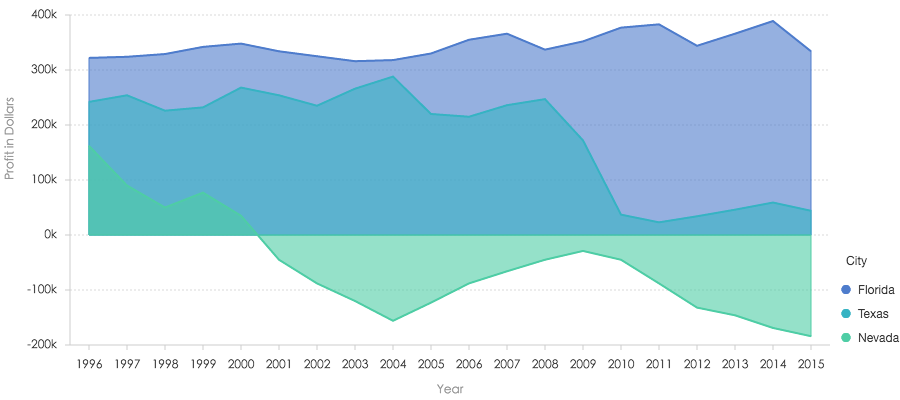
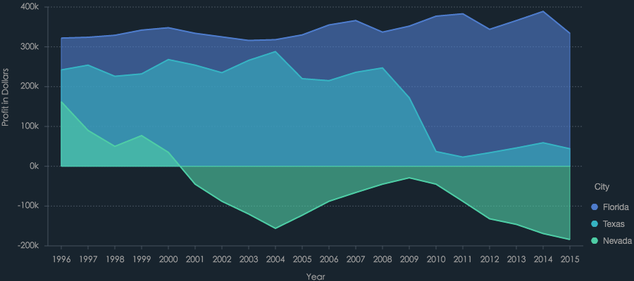
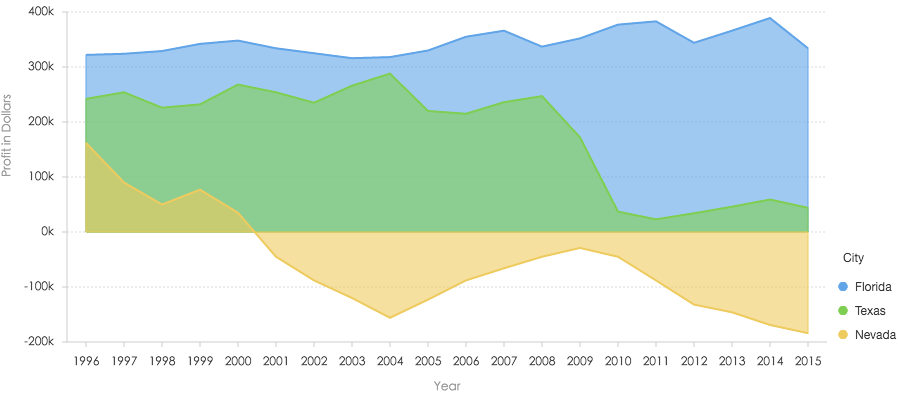

教程
简介
G2 除了提供默认的图表样式外，还开放了自定义皮肤的功能，以便用户进行图表样式的格式化定制。
默认主题
G2 中我们默认提供了以下三套主题：
- 主题名：default （默认主题）

- 主题名：dark

- 主题名：cherry

切换主题
默认我们提供了三套皮肤，分别是 'default'、'dark'、'cheery'。用户可以通过以下方式进行主题切换：
方式一： 直接传入主题名
var Global = G2.Global; // 获取 Global 全局对象
Global.setTheme('dark'); // 传入值为 'default'、'dark'、'cheery'的一种，如果不是，那么使用 default 主题。方式二： 传入 G2.Theme 对象
var Global = G2.Global; // 获取 Global 全局对象
var Theme = G2.Theme; // 获取 Theme 对象，包含三个属性： 'default' 'dark' 'cheery' 对应主题名
Global.setTheme(Theme['cheery']); // 传入值为 'default'、'dark'、'cheery'的一种，如果不是，那么使用 default 主题。个性化主题
方式一： 直接赋值给全局对象 Global
由于 G2 皮肤的配置项都是设置到全局变量上才生效的，所以我们可以直接设置变量，但是不推荐。
G2.Global.animate = false ; // 关闭默认动画
G2.Global.colors['default'] = ['red','blue','yellow']; // 更改默认的颜色方式二： 使用 Global.setTheme 方法
推荐！通过
var theme = G2.Util.mix(true, {}, G2.Theme, {
animate: false,
colors: {...},
shapes: {...}
// 具体的配置项详见 api/global.html
});
G2.Global.setTheme(theme); // 将主题设置为用户自定义的主题示例
var theme = G2.Util.mix(true, {}, G2.Theme, {
shape: {
polygon: {
stroke: '#213c51', // 地图轮廓线颜色
'stroke-width': 1 // 地图轮廓线宽度
},
hollowPoint: {
fill: '#21273b', // 点的填充颜色
'stroke-width': 2, // 点的边框宽度
radius: 3 // 点的半径
},
interval: {
'fill-opacity': 1 // 填充透明度设置
}
},
axis: {
bottom: {
labels: {
label: { fill: '#999'} // 底部标签文本的颜色
}
},
left: {
labels: {
label: { fill: '#999'} // 左部标签文本的颜色
}
},
right: {
labels: {
label: { fill: '#999'} // 右部标签文本的颜色
}
}
}
});
G2.Global.setTheme(theme);
$.getJSON('/data.json?filename=china', function(mapData) {
var Stat = G2.Stat;
var userData = [];
var features = mapData.features;
for(var i=0; i<features.length; i++) {
var name = features[i].properties.name;
userData.push({
"name": name,
"value": Math.round(Math.random()*1000)
});
}
var chart = new G2.Chart({
id: 'c1',
width: 650,
height: 450,
plotCfg: {
margin: [80, 80, 0, 80]
}
});
chart.source(userData);
var gmap = new G2.Plugin.GMap({
chart: chart,
mapData: mapData, // 地图数据
style: {
stroke: '#213c51',
}
}).draw();
chart.tooltip({
map: {
title: null,
name: "name",
value: "value"
}
});
chart.legend('value', false);
chart.polygon().position(Stat.map.region('name', mapData)).color('value','#39ccf4-#20546b');
chart.render();
});
var data = [
{'time': '10:10', 'call': 4, 'waiting': 2, 'people': 2},
{'time': '10:15', 'call': 2, 'waiting': 6, 'people': 3},
{'time': '10:20', 'call': 13, 'waiting': 2, 'people': 5},
{'time': '10:25', 'call': 9, 'waiting': 9, 'people': 1},
{'time': '10:30', 'call': 5, 'waiting': 2, 'people': 3},
{'time': '10:35', 'call': 8, 'waiting': 2, 'people': 1},
{'time': '10:40', 'call': 13, 'waiting': 1, 'people': 2}
];
var Frame = G2.Frame;
var frame = new Frame(data);
frame = Frame.combinColumns(frame,['call','waiting'],'count','type',['time', 'people']);
var chart2 = new G2.Chart({
id: 'c2',
width: 800,
height: 300
});
chart2.source(frame, {
'count': {alias: '话务量（通）', min: 0},
'people': {alias: '人数（人）', min: 0}
});
chart2.axis('time', {
title: null // 去除 X 轴标题
});
chart2.legend(false);// 不显示图例
chart2.intervalStack().position('time*count').color('type', ['#348cd1', '#43b5d8']); // 绘制层叠柱状图
chart2.line().position('time*people').color('#5ed470').size(4).shape('smooth'); // 绘制曲线图
chart2.point().position('time*people').color('#5ed470'); // 绘制点图
chart2.render();更多
全局变量中还有一些其他的配置信息，可以去深入了解一下。